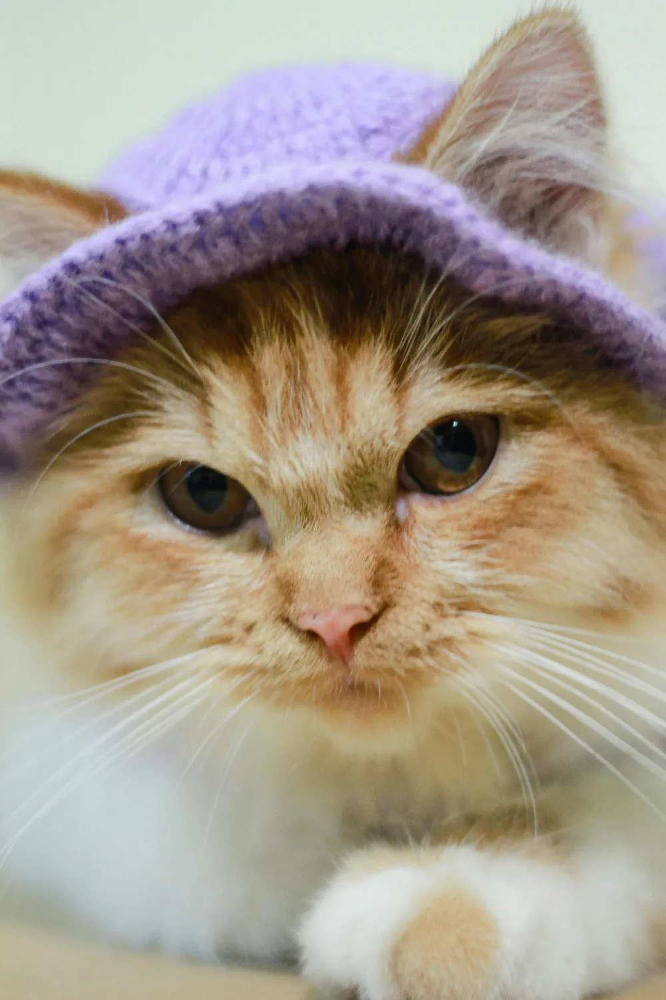

🐾 Bella
- Kön: Hona
- Ålder: 3 år
- Ras: Europeisk korthår
- Land: Italien
- Personlighet: Livlig, charmig och väldigt social.
- Anekdot: Bella älskar att ligga i fönstret och titta på förbipasserande turister i Rom – hon har till och med blivit fotad av resenärer.
- Svårighetsgrad: ★★☆☆☆
- Kastrerad: Ja
- Hälsa: Frisk och pigg.